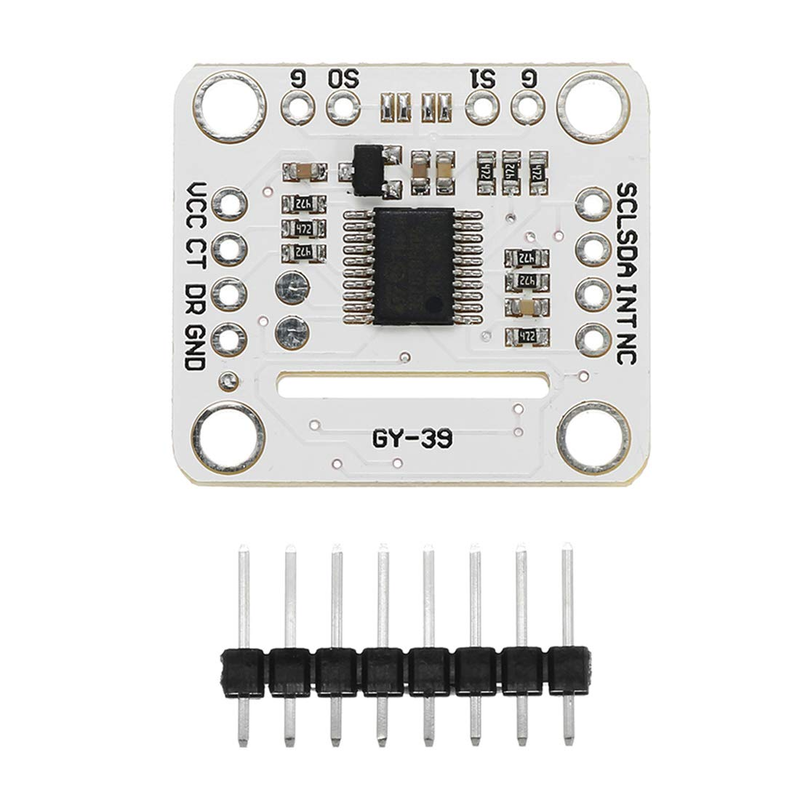
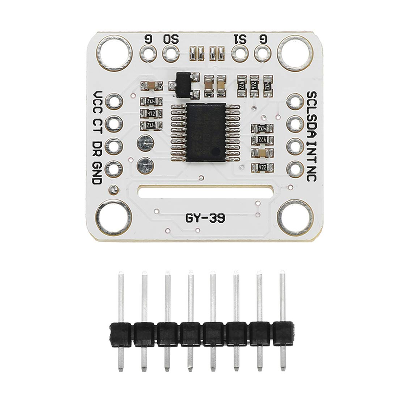

Componentes Eletrônicos
Começando com os componentes eletrônicos empregados em serviços: o resistor, o diodo LED, o transistor e o circuito integrado (IC). O resistor é um componente que limita a corrente elétrica ou divide tensão em um circuito — sua resistência é medida em ohms. O diodo, por sua vez, permite a passagem de corrente em apenas um sentido, sendo essencial em retificadores ou para proteção contra polaridade reversa. O LED (Light Emitting Diode) é um tipo especial de diodo que emite luz quando polarizado corretamente. Já o transistor funciona como interruptor ou amplificador — com três terminais permite controlar uma corrente maior por meio de uma menor. Por fim, o circuito integrado reúne vários componentes (transistores, resistores, capacitores) em um único chip, realizando funções mais complexas de lógica ou processamento. O domínio destes quatro componentes básicos é fundamental para compreensão de praticamente qualquer sistema eletroeletrônico.
 

Sensores Empregados
Em sistemas automatizados são empregados diversos sensores
— por exemplo sensores de temperatura, de
umidade e de luminosidade. Sensores são dispositivos que medem alguma grandeza física ou química
(como temperatura, vapor de água no ar, intensidade luminosa) e convertem essas informações em
sinais elétricos que podem ser tratados por um controlador. Por exemplo, um sensor de temperatura
vai medir o “calor” ou “frio” e gerar uma variação de tensão ou resistência. Um sensor de umidade
mede a presença de vapor de água no ambiente e fornece uma saída proporcional. Um sensor de
luminosidade (como um LDR ou fototransistor) responde à quantidade de luz e pode ser usado para
ajustar iluminação automática ou monitoramento. No contexto de automação, esses sensores são “os
olhos e ouvidos” do sistema — capturam dados do ambiente para que o sistema tome decisões, acione
atuadores, alerte condições ou otimize processos.